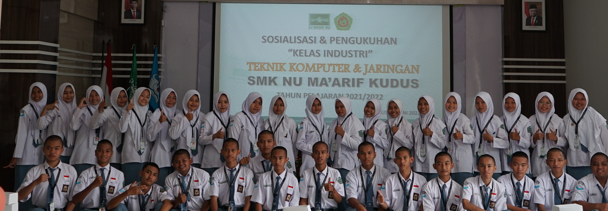
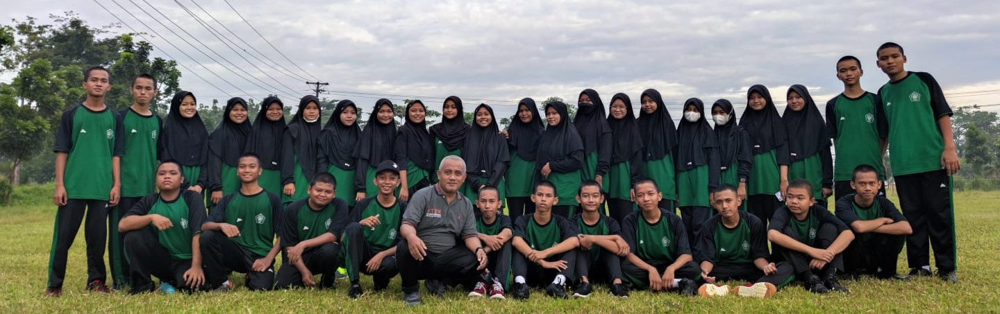
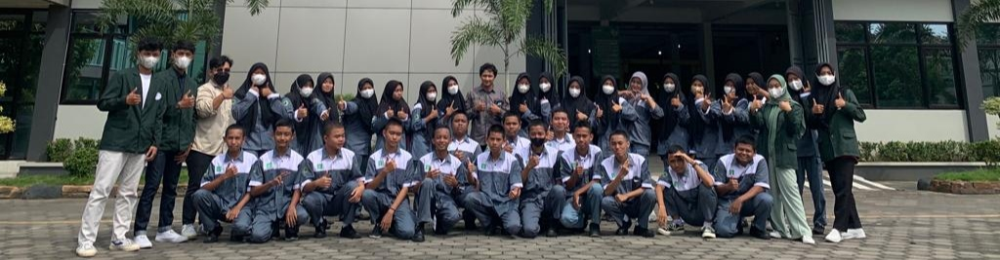

Sejarah
Kelas Industri merupakan kelas yang dibuat oleh pihak sekolah SMK NU Ma'arif Kudus sebagai kelas percontohan untuk jurusan Teknik Komputer dan Jaringan. Siswa dan Siswi yang tergabung menjadi satu adalah siswa dan siswi yang terpilih dalam seleksi selama 1 tahun.
Kelas Industri dikukuhkan pada tanggal 19 Juni 2022 di Aula SMK NU Ma'arif Kudus dan disaksikan oleh Kepala Sekolah SMK NU Ma'arif Kudus dan beberapa perwakilan industri diantaranya Telkom Kudus dan LearningX
Latar Belakang
Siswa dan Siswi Kelas Industri ini memiliki latar belakang yang bergagam, ada yang gemar ikut dalam organisasi dan ada yang tidak suka. Mayoritas dari mereka mengikuti Organisasi OSIS dan Ekstrakulikuler Jurnalistik dan Pramuka
Dari mereka juga ada yang mengikuti berbagai lomba seperti LKS, Porsema, PMR, Astra Voca Preneur. Bahkan mereka ada yang sudah menjadi salah satu pemegang UP (unit produksi) SMK NU Ma'arif Kudus
Kegiatan
Selama seleksi dan sesudah seleski kita banyak melakukan aktivitas dan kegiatan Industri yang membuat mental kita terbentuk agar diindustri kita tidak kaget. Di antaranya sebagai berikut
Fisik dan PBB
Selama 3 tahun kita diwajibkan dengan kegiatan fisik guna membentuk fisik kita kuat agar saat mengikuti seleksi kerja kita bisa langsung lolos karna sudah terbiasa. Fisik yang sering dilakukan adalah Lari 1km push-up 50x sit-up 50x
PBB juga sangat penting bagi kita untuk membentuk mental dan displin kita agar waktu kita bekerja di industri kita tidak kena SP karna telat berangkat bekerja
Produktif
Kegiatan Produktif atau Bengkel sangatlah penting bagi kita, dikarenakan untuk mempersiapkan skill dan diri kita untuk memasukin dunia kerja dan industri kedepanya. Kegiatan Produktif terbagi menjadi dua, yaitu Jaringan dan Pemrograman
Produktif jaringan adalah produktif yang membahas dan mempelajari seputar jaringan seperti Mikrotik, Sisco, Fiber Optik dan lain sebagainya
Produktif Pemrograman membahas tentang dunia Pemrograman, Kelas kita juga berkerja sama dengan LearningX